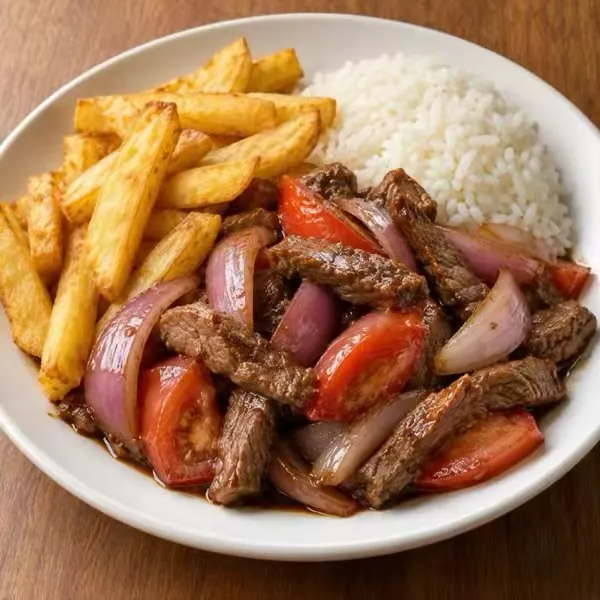
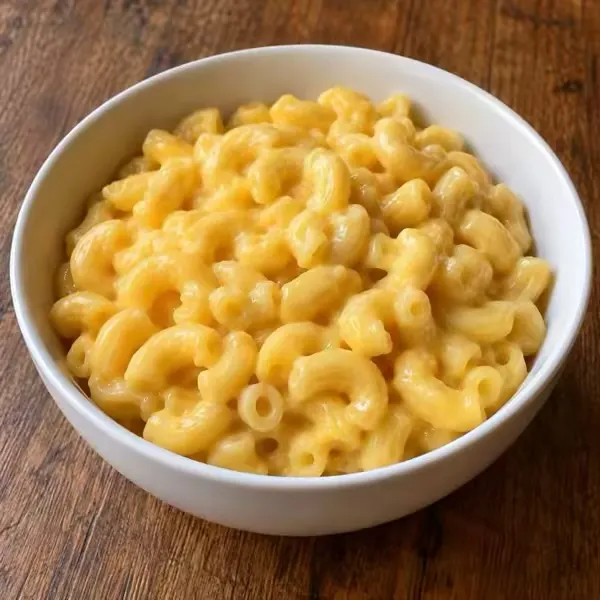

Vencito reste gratuit
Produits, dates, rappels, scan, recettes et liste de courses. Les fonctions que vous utilisez restent disponibles.
VOTRE CUISINE, MIEUX ORGANISÉE
Suivez les dates de péremption, découvrez des recettes et organisez vos repas avec Vencito.
Gratuit · Sans publicité · Sans compte en usage local
 Vue illustrative de l’application
Vue illustrative de l’applicationPLUS D’IDÉES, MOINS DE GASPILLAGE
Plus de 1 500 plats au quotidien, avec des valeurs nutritionnelles indicatives.
Trois idées du catalogue pour votre prochain repas. Touchez un plat pour découvrir sa préparation.
UN PEU D’ORDRE, PLUS DE TRANQUILLITÉ
Choisissez vos recettes, planifiez vos repas et ajoutez les ingrédients manquants à votre liste.
Organisez-vous avec Vencito →Choisissez un jour pour voir ce qui manque.
DÉCOUVREZ LE FONCTIONNEMENT
Découvrez comment scanner un emballage et ajouter un produit dans Vencito.
Fonctions ↓Le scan présenté dans la vidéo est une simulation illustrative.
Comment ça marche

De l'emballage, avec la date visible. Ou pointez la caméra en direct : elle lit le code-barres et la date en même temps. Vous pouvez ajouter d'autres photos : produit, code-barres et date de péremption.
Il lit la date, propose un nom et une catégorie, et cherche le code-barres dans Open Food Facts et ses bases de cosmétiques et d'autres produits. Vous vérifiez et enregistrez.

Une notification par jour, à l'heure que vous choisissez, avec ce qui va bientôt se périmer : par défaut 30, 15, 7, 3 et 1 jour avant.
Essayez ici
C'est une version simplifiée du lecteur de dates de l'app. Il comprend les formats imprimés sur les emballages et préfère la date de péremption à la date de fabrication.
Date de péremption
—
—Fonctions
EXP 14/02/27, 25-08-2026, 25 AOUT 2026, 08/2027, DLC 04/27… Il distingue péremption et fabrication et lit des emballages en six langues.
Scan en direct ou depuis la photo, avec EAN, UPC et QR. Open Food Facts (et ses bases de cosmétiques et d'autres produits, comme les médicaments sans ordonnance) remplit le nom, la marque et la catégorie.
Des recettes avec ce que vous avez, en commençant par ce qui expire bientôt. Un catalogue de plus de 1 500 plats courants et faciles de plusieurs pays, avec photos et dans votre langue, pour le petit-déjeuner, le goûter, le déjeuner et le dîner, avec mode cuisine et recettes enregistrées. Il fonctionne hors ligne.
Un calendrier avec une recette suggérée par jour, en utilisant d'abord ce qui expire en premier. Changez n'importe quelle recette, retirez-la ou ajoutez-en une, et ajoutez à la liste ce qu'il manque pour la semaine.
Notez ce qu'il faut acheter, ajoutez d'un geste ce qui manque à une recette ou laissez l'app ajouter ce qui est épuisé. Cochez ce que vous avez acheté et partagez la liste en texte.
Gardez les produits de plusieurs maisons et choisissez laquelle afficher, ou voyez-les toutes ensemble. Les rappels et le widget réunissent les dates de toutes les maisons.
Produits, Recettes, Courses et Plan dans une barre du bas ; les Réglages restent en haut. Identique sur iPhone et Android.
Scan continu : code-barres, date, c'est fait. Si une date n'est pas lue avec certitude, l'app vous demande de la confirmer avant d'enregistrer.
Plus de cent produits courants avec photo, pour ajouter vos courses d'un geste : lait, œufs, pain, fruits… Il propose d'abord ceux que vous utilisez le plus et estime la date de péremption de chaque produit.
Combien vous avez consommé, quelle part à temps, ce que vous avez jeté et ce que vous avez sauvé de justesse, avec votre série sans gaspillage, un graphique sur six mois et la comparaison avec la période précédente. « Jeter » enregistre ce qui s'est abîmé ; « Supprimer » corrige une erreur de saisie.
Visez le code-barres ou le QR du produit utilisé et une unité de celui qui périme en premier est déduite. Passez au suivant sans toucher l'écran.
Depuis une photo (appareil ou galerie) ou un PDF : il lit les lignes, ignore taxes et paiements, estime la péremption de chaque produit et, si le ticket indique le code-barres, cherche le vrai nom.
Sur une recette, partagez la photo et les instructions en un geste : choisissez ChatGPT, envoyez, activez le mode vocal et il vous guide pas à pas, avec les portions choisies.
Pour ce qui ne périme pas ou n'a pas de date : enregistré à part, sans rappels.
En une seule image, il lit le code-barres, la date de péremption et le nom du produit. Chaque valeur n'est confirmée que lorsqu'elle se répète, pour éviter les lectures floues.
Gardez une photo du produit, une du code-barres, une de la date de péremption et autant que vous voulez. Elles s'affichent dans une galerie à faire défiler.
Sur l'écran d'accueil et l'écran verrouillé, avec ce qui expire ensuite. Touchez un produit pour l'ouvrir dans l'app.
Périmés, bientôt périmés et à venir, avec un résumé en haut et une vignette pour chaque produit.
Glissez pour consommer une unité ou retirer le produit. En cas d'erreur, secouez l'iPhone pour annuler, ou touchez « Annuler » sur Android.
Liste et détail côte à côte, dans toutes les orientations ; sur iPad aussi avec le multitâche et, avec un clavier, ⌘N ajoute un produit. Sur les tablettes Android, la même vue à deux panneaux.
Espagnol, anglais, portugais (Brésil), français, italien et allemand. Changez instantanément dans Réglages.
Compatible avec VoiceOver et les grandes tailles de texte. Chaque produit est lu en entier : nom, état et date.
Demandez « Qu'est-ce qui périme cette semaine ? », ajoutez un produit ou marquez-le consommé à la voix.
Depuis la notification, marquez « Consommé » ou « Reporter », sans ouvrir l'app.
Une fois ouvert, un emballage périme plus tôt (lait, mayonnaise…) selon sa durée après ouverture.
Chaque unité consommée est notée, par mois, avec la mention « à temps » ou « déjà périmé ».
Détecte les produits en double et les fusionne en vous laissant choisir lequel garder.
Exportez et importez tout dans un fichier, avec ou sans photos : produits, historique, foyers et liste de courses.
Cherchez par nom et filtrez par catégorie et emplacement : placard, frigo, congélateur…
Choisissez 6 recettes et partagez une image sur WhatsApp pour voter. La gagnante est ajoutée au plan du jour.
Icônes et filtres par régime dans les recettes : végétarien, sans gluten et plus.
Voyez où (frigo, congélateur, placard…) vous gaspillez le plus, et quelles recettes vous ajoutez le plus au plan.
Recettes
Plus de 1 500 plats courants et faciles de nombreux pays, chacun avec sa photo. En voici quelques-uns.

 · 40 min
· 40 min

 · 55 min
· 55 min

 · 25 min
· 25 min

 · 25 min
· 25 min

 · 25 min
· 25 min

 · 50 min
· 50 min

 · 25 min
· 25 min

 · 60 min
· 60 min

 · 35 min
· 35 min

 · 25 min
· 25 min

 · 30 min
· 30 min

 · 30 min
· 30 min

 · 60 min
· 60 min

 · 50 min
· 50 min

 · 30 min
· 30 min

 · 20 min
· 20 min
Les recettes sont proposées selon ce que vous avez et ce qui expire en premier.
VENCITO PLUS · Bientôt
Vencito Plus est en préparation : une nouvelle façon d’organiser la maison ensemble.
Essai prévu au lancement. Pas encore disponible.
Produits, dates, rappels, scan, recettes et liste de courses. Les fonctions que vous utilisez restent disponibles.
Des foyers partagés et des invitations pour organiser ensemble les produits de la maison.
En préparation pour iPhone et Android. Les fonctions et conditions finales seront confirmées avant le lancement.
L’utilisation locale restera sans compte. Le partage d’un foyer avec Plus nécessitera un compte et une synchronisation avec le service.
Aucun paiement ni abonnement n’est disponible sur cette page. Tarifs et conditions à confirmer.
Découvrir Vencito Plus →Confidentialité
Vencito n'a ni comptes, ni serveurs propres, ni statistiques, ni publicité.
Les produits, les photos et les réglages sont enregistrés sur votre iPhone, iPad ou téléphone Android. Sur les appareils Apple, si vous activez la synchronisation iCloud, aussi dans votre iCloud privé (le développeur n'y a pas accès).
Le texte des photos et les codes-barres sont lus sur l'appareil : avec la reconnaissance d'Apple sur iPhone et iPad, et avec ML Kit de Google sur Android.
Pour chercher un produit, seul le numéro du code-barres est envoyé à Open Food Facts, à ses bases sœurs et, en dernier recours, à GTINSearch. Vous pouvez le désactiver.
Les notifications sont programmées par le téléphone lui-même. Elles ne passent par aucun serveur.
Lire la politique de confidentialité complète
Les informations ci-dessus décrivent la version actuelle. Les foyers partagés de Plus nécessiteront un compte et l’envoi des données partagées au service. La politique de confidentialité sera mise à jour avant le lancement.
FAQ
Vencito est gratuit. Plus sera une option supplémentaire, encore en préparation, avec 1 mois d’essai gratuit prévu au lancement. Les tarifs ne sont pas encore fixés.
Oui. Seule la recherche du produit par code-barres a besoin d'internet.
Oui. Il existe des versions pour iPhone, iPad et Android, tablettes comprises, avec les mêmes six langues. Les données ne se synchronisent pas entre un iPhone et un Android : vous les transférez en exportant puis en important un fichier depuis les Réglages.
Oui. Dans Réglages, vous exportez un fichier avec tous vos produits (avec ou sans photos) et vous l'importez sur un autre appareil.
L'app utilise le dernier jour de ce mois, ce qui correspond à la façon dont les emballages se lisent. Elle comprend aussi bien 08/2027 que DLC 04/27.
Oui. En plus de la photo principale, vous pouvez en ajouter une du code-barres, une de la date de péremption et jusqu'à 8 autres. Faites-les défiler sur l'écran de détail ; elles sont incluses à l'export.
Une option pour partager des foyers et gagner en confort. En préparation, avec 1 mois d’essai gratuit prévu au lancement ; tarifs et conditions seront confirmés au préalable. Les fonctions gratuites actuelles resteront disponibles.
Une autre question ou un problème ? Contacter l'aide.
UN PETIT CHANGEMENT CHAQUE JOUR